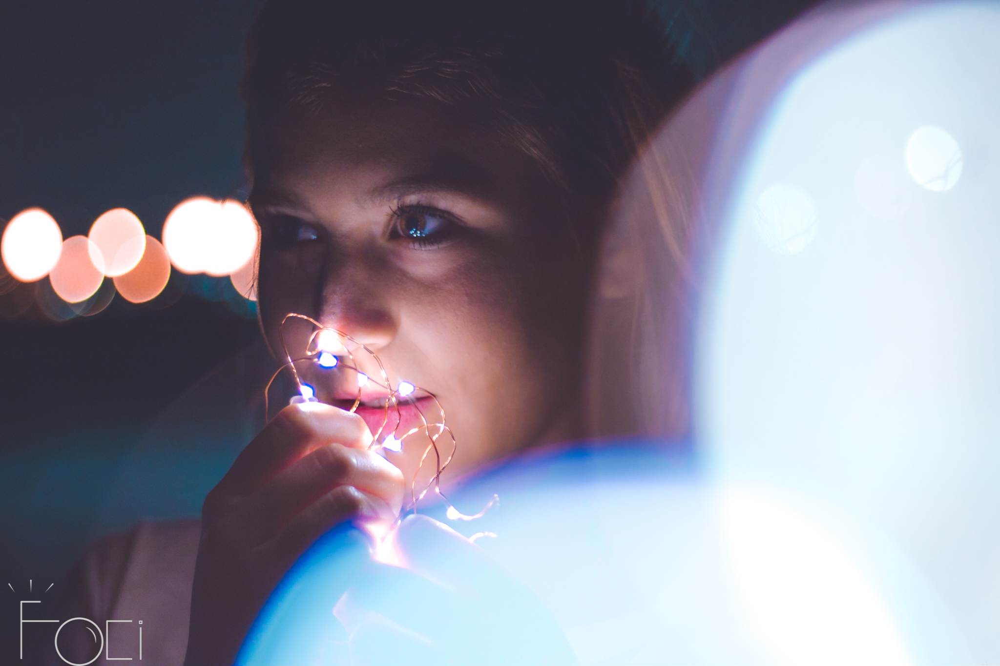
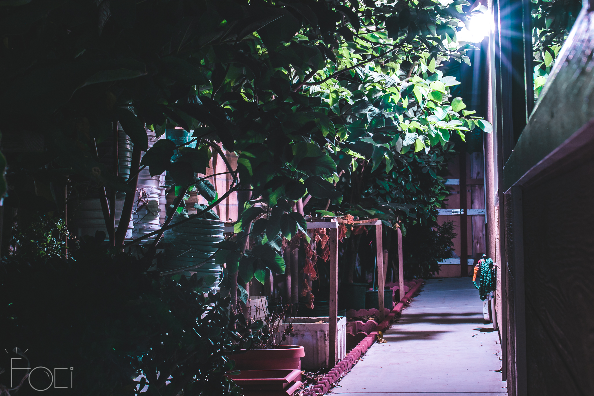

.PNG) HomeHome
HomeHomeBorn half a world apart, Benji Le and Kent Nguyen are aspiring college students based in San Diego. Benji developed a liking in photography when he recieved his first DSLR camera from his brother. From there, Benji started to experiment with different subjects, including Kent. That is when Kent started to have an interest in photography and foci was born. As a team, Kent handles the technical and accountant aspects while Benji is the camera eyes and producer.
As foci, we create the dreams and visions of others and make it come true through photography. foci focuses on fashion, models, landscapes, and more.
 